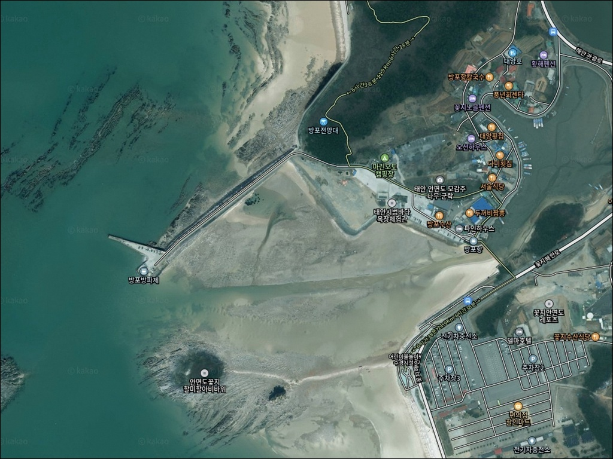
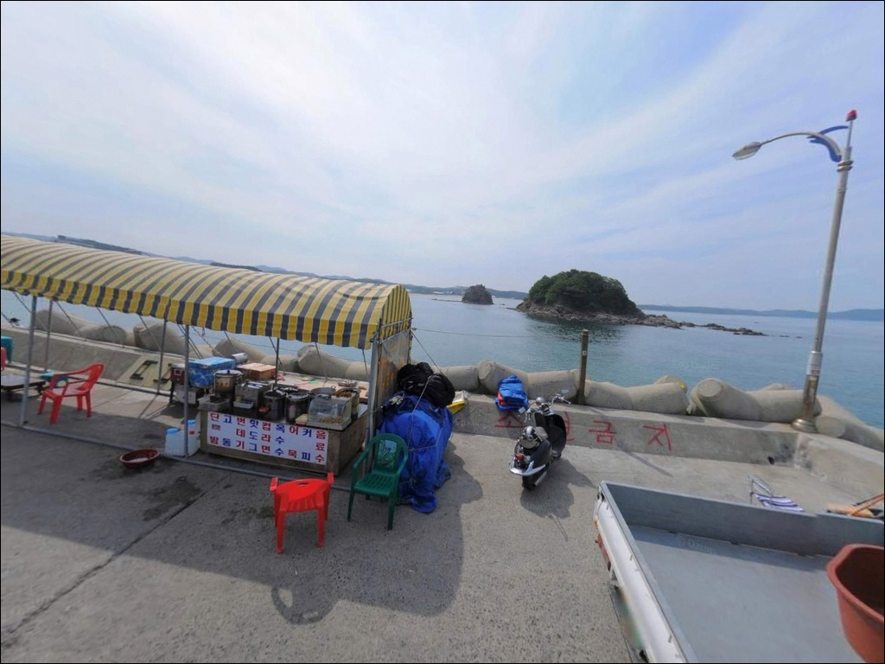
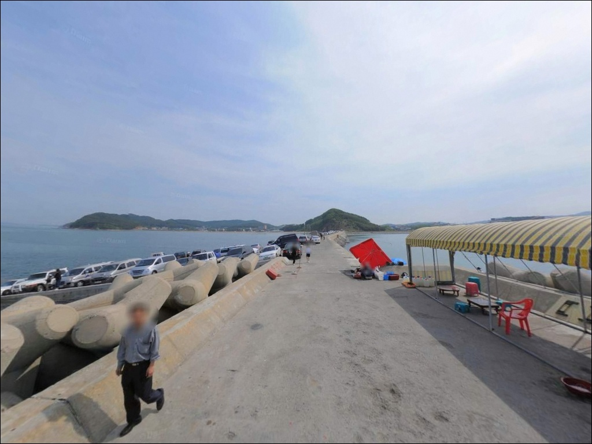
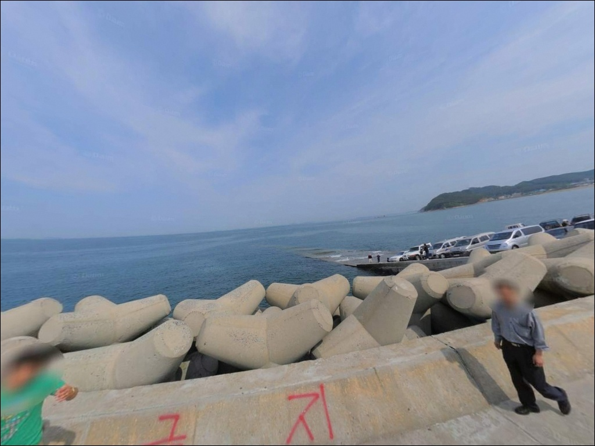
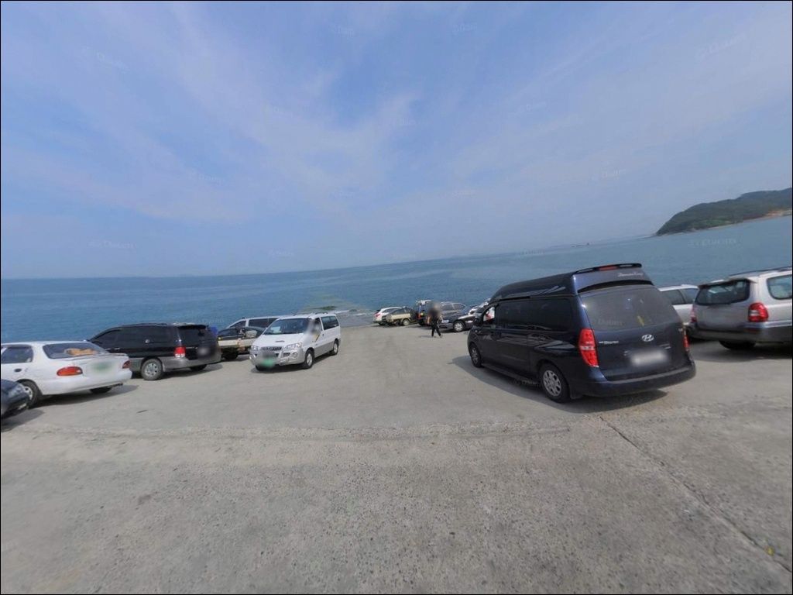
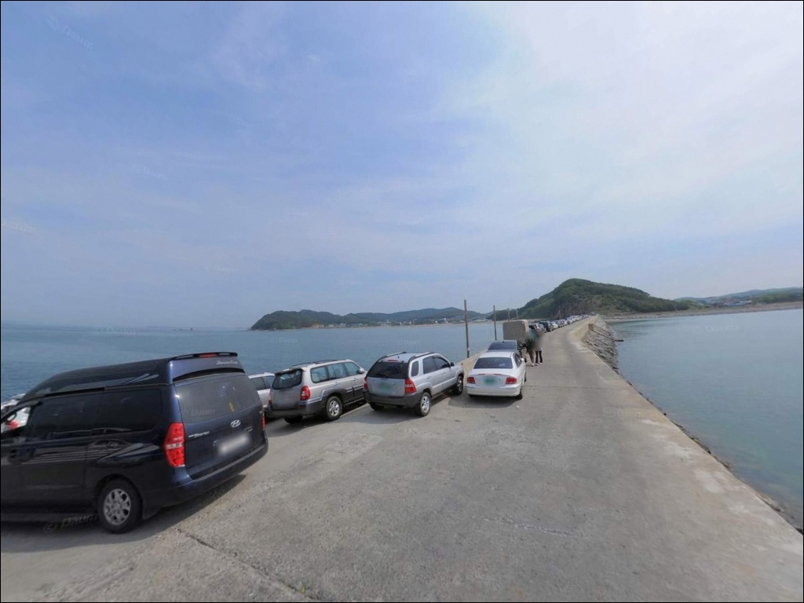
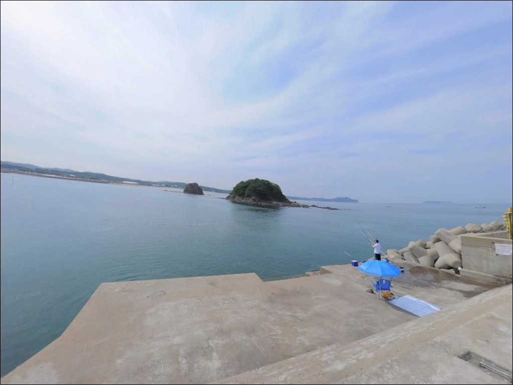
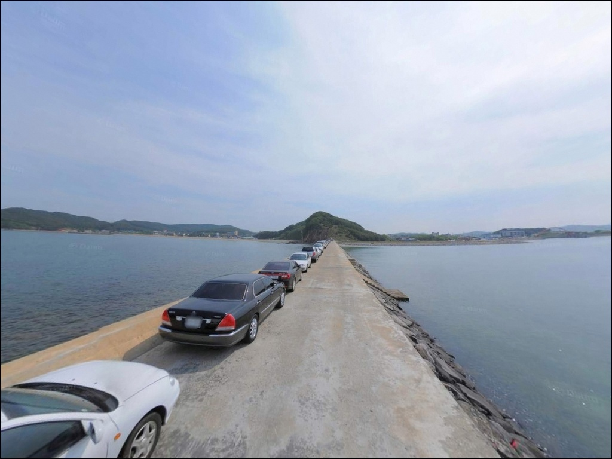
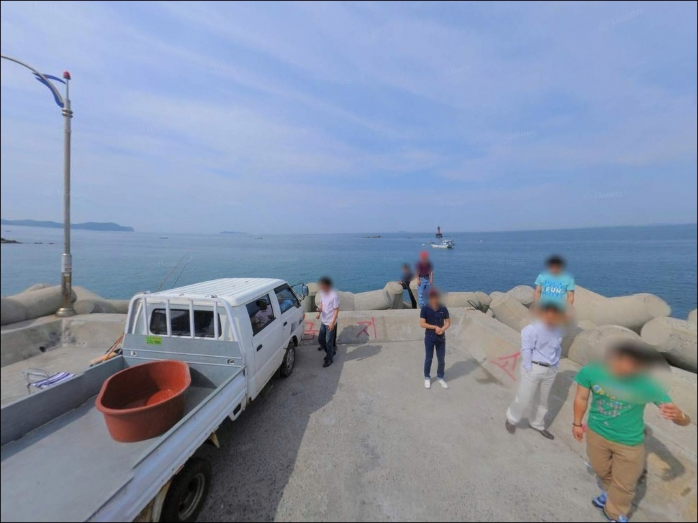

방포항 (방포방파제), 충남 태안군 안면도 차박, 낚시 명소
이 페이지에는 광고(제휴 링크 포함)가 있으며, 광고 링크를 통해 구매하면 운영자가 판매 수익 또는 수수료를 받을 수 있습니다. 포인트 사진: 카카오맵 스카이뷰·로드뷰. 이 페이지의 지도·사진 이미지는 카카오맵의 실제 서비스 이미지와 다를 수 있습니다.


방포방파제
충남 태안군 안면읍 승언리 1317-18
방포방파제에서 가장 많이 하는 실수는
물때 계산 없이 끝단에 자리를 잡는 것입니다.
서해 조수간만의 차가 큰 이 구조에서
간조 전후에는 수심이 지나치게 빠져,
어떤 채비를 써도 바닥만 긁는 상황이 이어집니다.
이 글은 방포방파제의 진입 환경과 물때 기준,
지형별 낚시 여건에 집중하며,
조황 단정이나 특정 어종 보장은
이 글의 범위에 포함되지 않습니다.

1. 진입 동선과 포인트 접근성
방포항은 안면읍 승언리에 위치한 지방어항으로,
방포항길을 따라 항구 안쪽까지 포장도로가 이어져 있습니다.
방파제까지 차량 진입이 가능한 구조이며,
승용차·소형 SUV 기준으로는 접근에 큰 어려움이 없는 편입니다.
항구 입구와 방파제 초입 쪽에
회차 가능한 공간이 어느 정도 갖춰져 있어
대형 차량도 진입 자체는 가능한 편입니다.
다만 성수기에는 낚시객과 관광객 차량이 겹쳐
방파제 인근 주차 공간이 포화 상태가 되기 쉬우므로,
주말이나 휴가철에는 이른 시간 진입이 유리합니다.
주차는 방포항 공영주차장과
방파제 초입 주변 공터를 활용하는 방식이 일반적입니다.
어선 이동 동선을 막지 않는 자리를 먼저 확인하고,
방파제 상단까지 도보로 이동하는 것이
이 포인트를 효율적으로 쓰는 방법입니다.

2. 차박 환경과 야간 체류 여건
방포항은 꽃지해수욕장 바로 옆에 붙은 관광지형 항구입니다.
야간에도 관광객과 낚시객 차량 통행이 있는 편이며,
항구 주변에 횟집·민박이 산재한 구조라
완전한 고요함을 기대하기는 어려운 환경입니다.
항구 시설물 인근으로 가로등이 있을 가능성이 높고,
방파제 끝단으로 갈수록 광량이 부족해지는 구간이 섞이는 편입니다.
야간 낚시를 계획한다면 헤드랜턴은 반드시 준비해야 합니다.
외항 쪽은 서풍·북서풍의 영향을 직접 받는 구조라
가을 이후 기상이 급변하는 날에는 체류 환경이 빠르게 나빠질 수 있습니다.
방포항 일대는 태안해안국립공원 구역에 포함될 가능성이 있습니다.
공원 구역 내 지정 장소 외에서는
야영·취사가 원칙적으로 허용되지 않으므로,
출발 전 안면도분소(041-673-1066)에
구역 여부와 야박 허용 범위를 먼저 확인해야 합니다.


3. 주변 편의시설 및 인프라 현황
방포항 일대는 안면도 내에서 편의시설 접근이
가장 용이한 편에 속하는 곳입니다.
방포항길을 따라 방포수산회타운(041-673-4575),
다미횟집(041-673-1124), 승진수산횟집(041-673-3378) 등
수산 식당가가 항구 바로 인근에 자리잡고 있습니다.
안면읍 읍내까지는 항구에서 약 2~3km 거리로,
GS25·CU·이마트24·세븐일레븐 등
편의점이 다수 분포하고 있습니다.
낚시 전후로 식사나 소품 보충이 필요하다면
안면읍 읍내 방향이 가장 효율적인 동선입니다.
응급 상황을 대비해 안면읍 보건지소가
읍사무소 인근에 있다는 정보가 확인됩니다.
연료·식수·비상약품은 출발 전에 갖추는 편이 안전하며,
현지 편의점 24시간 운영 여부는
현장에서 직접 확인하는 것이 정확합니다.

4. 방문 전 반드시 챙겨야 할 준비사항
방포방파제 방문 전 가장 먼저 확인할 것은 물때입니다.
서해 안면도 일대는 조수간만의 차가 상당히 크고,
간조 시 방파제 주변 수심이 크게 빠지는 구조라
들물이 시작되는 타이밍을 기준으로 입장 시각을 잡는 것이
기본 출조 전략입니다.
바다타임에서 승언리·방포항 기준 물때를
출발 전에 반드시 확인해야 합니다.
외항 측은 서풍·북서풍의 영향을 받기 쉬운 구조입니다.
기상청 예보에서 풍속과 파고를 함께 확인하고,
파고가 높은 날에는 방파제 끝단 접근을 자제해야 합니다.
파도 넘침이 발생할 수 있는 구조이므로
구명조끼 착용은 선택이 아닌 기본입니다.
외항 수중여 구간은 밑걸림이 잦은 편입니다.
원투낚시를 주력으로 삼을 계획이라면
여분 채비를 넉넉하게 준비하는 것이 현실적입니다.
방포항은 어선 77척이 활동하는 어항이므로
주차 후 어선 이동 동선과 어구에 접촉하지 않는 자리를
먼저 확인하는 것이 기본 매너입니다.

5. 조류가 살아나야 낚시가 되는 포인트 구조
방포방파제의 핵심은 외항 쪽 수중여 구간과 방파제 끝단입니다.
내항은 바닥 구조가 비교적 단순하고 수중여 발달이 적어
낚시 효율이 낮은 편으로 봐야 합니다.
반면 외항 끝단 쪽은 수중 암초 지형이 형성되어 있어
어류의 은신처와 먹이 활동 구간이 자연스럽게 갖춰져 있는 구조입니다.
수중여란 수면 아래 잠긴 암초 지형을 가리키며,
어류가 은신하고 먹이 활동을 하는 핵심 서식처 역할을 합니다.
방파제 끝단 쪽은 할미·할아비바위 방향의 외항으로 열려 있어,
들물이 시작되면서 조류가 외항 쪽에서 안으로 들어오는 흐름이 형성됩니다.
방파제 외항 끝단은 들물이 시작되는 타이밍에
수심과 조류 흐름이 살아나 낚시 여건이 달라지는 자리입니다.
간조 시에는 바닥이 드러날 만큼 물이 빠지는 조건이 형성될 수 있어,
완전 간조 직후 물골 지형을 먼저 파악해두고
들물이 채워지는 시점에 공략하는 방식이 이 포인트에 잘 맞습니다.
외항 끝단에서 40~60m 캐스팅으로
수중여 라인을 공략하는 것이 기대를 걸 수 있는 자리 선택입니다.
최신 조황은 출조 전에 반드시 직접 검색해 확인하시기 바랍니다.


6. 방포방파제에 어울리는 낚시 스타일
이 포인트에서 가장 잘 맞는 낚시는 원투낚시입니다.
원투낚시란 무거운 봉돌과 긴 낚싯대를 이용해
원거리로 채비를 던져 바닥층 어종을 노리는 방식으로,
외항 끝단에서 할미·할아비바위 방향으로 캐스팅하면
수중여 라인을 효과적으로 공략할 수 있는 구조입니다.
이 지형에서 기대해 볼 수 있는 어종으로는
우럭·놀래미·붕장어·돌가자미 등 서해 방파제 바닥층 어종이 중심입니다.
루어낚시도 들물 전후로 노려볼 만합니다.
외항 측 조류가 살아나는 타이밍에
소프트베이트 계열 루어로 방파제 끝단 주변을 탐색하면
우럭·농어를 기대해 볼 수 있는 조건이 형성됩니다.
방포항 공식 주요 어종에 농어가 포함되어 있어
들물 타이밍 루어 공략은 이 포인트에서 시도해볼 만한 스타일입니다.
가을 시즌에는 에깅 방식으로 주꾸미를 노려볼 수 있습니다.
안면도 서해권은 가을 주꾸미 시즌이 형성되는 권역이며,
내항·외항 경계 구간을 천천히 탐색하는 방식이 어울립니다.
방파제 내항 초입 쪽은 수심이 상대적으로 얕은 편이라
가족 동반 생활낚시 방식으로 간단한 채비를 운용하기에도 무난한 구조입니다.

7. 대안 포인트와 플랜 B 동선
백사장항과 두애기 갯바위가 방포방파제의 현실적인 대안 포인트입니다.
같은 승언리 권역 안에 있는 두애기 갯바위(승언리 2004-9 일대)는
방포항권으로 묶여 소개되는 갯바위 포인트로,
방파제와 다른 지형 조건에서 낚시를 이어갈 수 있습니다.
조류 방향이나 주차 여건이 방파제 쪽에서 여의치 않을 때
가장 먼저 눈길이 가는 대안입니다.
촛대바위·방포 갯바위(승언리 1336-92 일대)도
같은 권역 내 대안으로 참고할 만합니다.
간조 시 진입이 가능한 구조이지만
들물이 들어오면 빠른 철수가 필요한 지형이므로,
입장 전 물때 확인이 필수 조건입니다.
안면도 북쪽으로 4~5km 이동하면 백사장항에 닿습니다.
방파제와 부교 시설이 발달한 곳으로
진입과 주차 여건이 안정적인 편입니다.
방포방파제를 처음 찾는다면
백사장항을 기점으로 삼고 방포방파제를 병행 탐색하는 동선이
이 권역을 효율적으로 도는 방법입니다.

들물 타이밍을 이해하면
방포방파제가 달라 보입니다
원투낚시나 루어낚시를 즐기는 낚시인에게
방포방파제의 외항 수중여 구간은
기대를 걸어볼 수 있는 구조입니다.
서해 방파제 특유의 들물 타이밍 낚시를 즐기고 싶은 낚시인에게
이 포인트의 지형 조건은 잘 맞는 편이며,
안면도 서해권의 다양한 갯바위·방파제 포인트와
하루 동선으로 묶어볼 수도 있는 자리입니다.
반면 물때 계산 없이 간조 전후에 끝단에 자리를 잡거나,
성수기에 주차 공간을 확보하지 못한 채 들어가면
낚시를 제대로 펼치기 어려운 상황이 이어질 수 있습니다.
물때 확인, 기상 점검, 여분 채비 준비,
이 세 가지를 갖추고 간다면
안면도 서해 방파제 낚시의 묘미를 충분히 느낄 수 있는 포인트입니다.
낚시를 마치고 방포항 수산회타운에서
우럭회 한 접시로 마무리하거나,
할미·할아비바위 일몰을 차 안에서 바라보며 하룻밤 머무는 여정이라면
서해 방파제 낚시와 차박을 자연스럽게 엮을 수 있는 곳입니다.